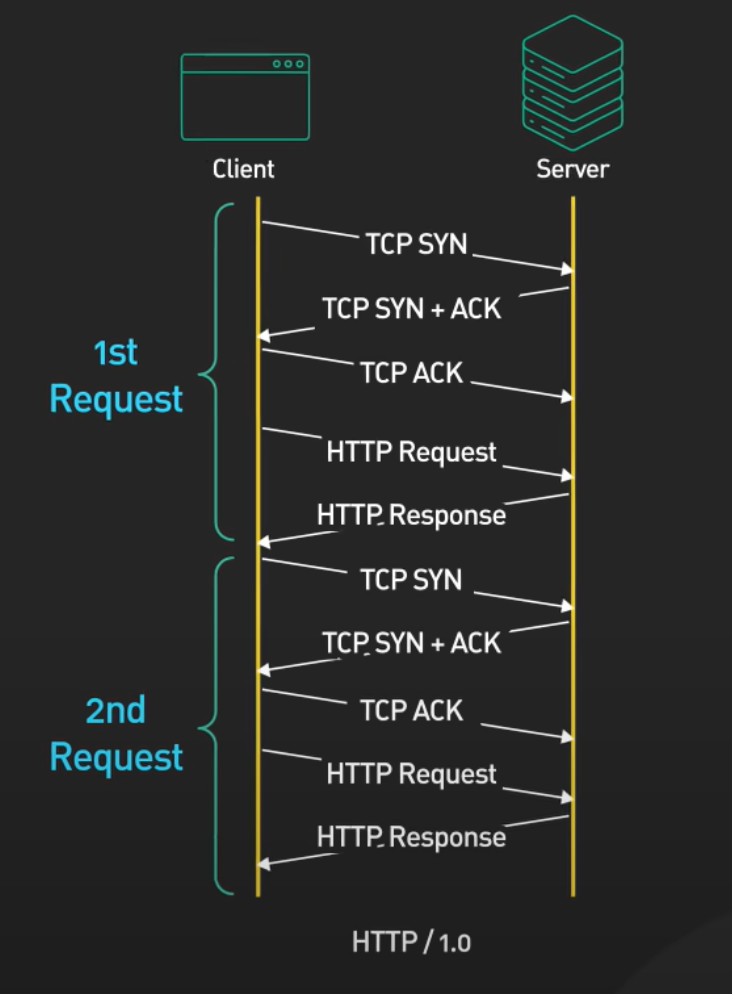
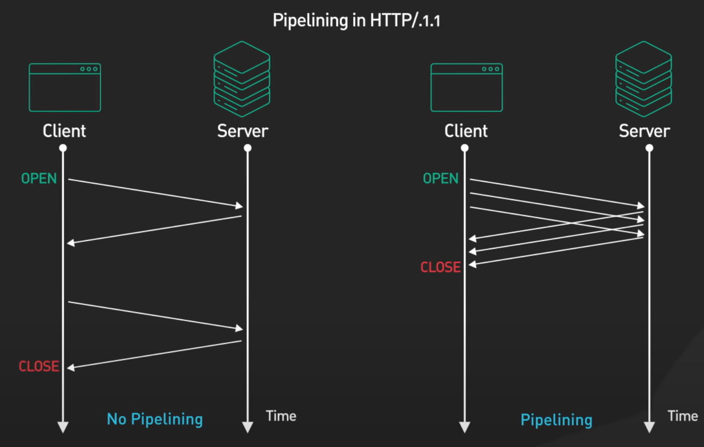
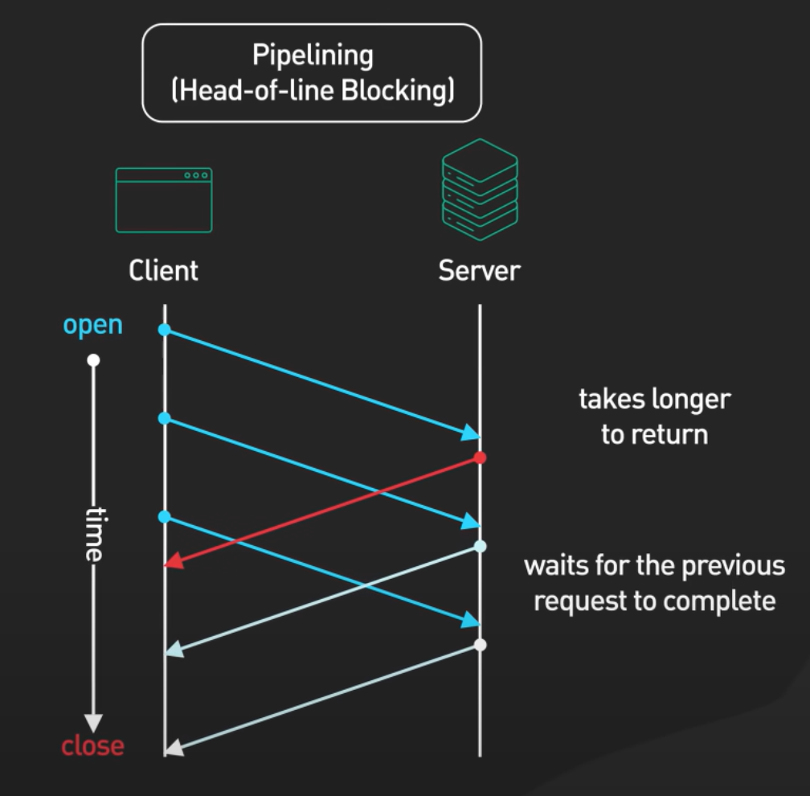

HTTP "Hypertext Transfer Protocol" is an application-layer protocol used for transmitting hypermedia documents, such as HTML.
HTTP is a protocol for fetching resources such as HTML documents.
Clients and servers communicate by exchanging individual messages (as opposed to a stream of data). The messages sent by the client are called requests and the messages sent by the server as an answer are called responses.
HTTP is a client-server protocol: requests are sent by one entity, the user-agent, which is any tool that acts on behalf of the user.
This explains why multiple requests are made to view a single web page.
The server serves the document as requested by the client.
Between the Web browser and the server, numerous computers and machines relay the HTTP messages in different layers of the OSI stack. Those operating at the application layers are generally called proxies. These can be transparent, forwarding on the requests they receive without altering them in any way, or non-transparent, in which case they will change the request in some way before passing it along to the server. Proxies may perform numerous functions:
When you load a webpage, your browser first establishes a connection to the requested web server via a TCP handshake. If the website operates with HTTPs (the encrypted version of HTTP), a key exchange process happens between you (the client) and the server so that you can exchange encrypted messages.
HTTP requests and responses exist inside the TCP packet, and these requests/responses are constructed in plain text, meaning, unlike TCP and IP headers which contain binary data that could be arbitrary for us humans, HTTP headers contain text data.
GET /index.html HTTP/1.1
Host: www.example.com
User-Agent: Mozilla/5.0 (Windows NT 10.0; Win64; x64)
Accept: text/html,application/xhtml+xml
Accept-Language: en-US,en;q=0.5
Connection: keep-alive
This is an example of a simple HTTP request. Here's a breakdown of each line:
GET is the HTTP Method used for this connection. It could be
POST, PUT, DELETE
among others. It simply specifies the action we want to perform. In this case, it's
fetching resources./index.html is the resource we're requesting from the web server. Remember
that this whole HTTP header is encapsulated
within more headers (IP header, TCP header ...), so we don't really need to specify the IP address of the
web server since that information is already present in the IP header. HTTP/1.1 specifies the HTTP versionHost, User-Agent, Accept, Accept-Language and
Connection are HTTP headers and they're used to control how the client and
server communicate. HTTP/1.1 200 OK
Date: Fri, 25 Jul 2025 12:00:00 GMT
Server: Apache/2.4.57
Content-Type: text/html; charset=UTF-8
Content-Length: 1256
Connection: keep-alive
<html>
<head>
<title>Example</title>
</head>
<body>Hello World!</body>
<html>
This is an example of a simple HTTP response. Here's a breakdown of each line:
HTTP/1.1 is the HTTP version used for this connection.
200 OK is the HTTP Status Code which is a number sent by the server to tell
the client what happened with the request. In this case, the request was successful.Date, Server, Content-Type, Content-Length and
Connection are HTTP headers and they're used to control how the client and
server communicate. <html>...<html>
is the response body which is the actual resource (webpage, file or data) sent by the server.
HTTP 1.0 added functionality for the firstly introduced HTTP 0.9. This functionality included:
GET)With HTTP 0.1, each request needed its own TCP connection, which wasn't really efficient in terms of speed and performance.
HTTP 1.1 improved performance and added new functionality to HTTP 1.0, which included:
The connection now can be reused to execute several requests within a single TCP connection. This improves performance by eliminating the need to establish a new TCP connection for each request.
For example, if the Connection: keep-alive header is present, the TCP connection remains open.
Note that HTTP 1.1 mostly opened multiple TCP connection (typically 6) in order to send multiple requests simultaneously as pipelining was rarely used. This made it slowed and inefficient, and was fixed later with Multiplexing in HTTP 2.0
This feature allows your browser to send multiple HTTP requests over the same TCP connection without waiting for responses. The responses, however, have to be sent back in order.
Although pipelining improved speed, it wasn't supported by many browsers and servers. It also introduced a new issue: Head Of Line Blocking, which occurs when one of the responses takes too long to get processed, and it delays the responses that come after it. 
The Host header is mandatory in HTTP 1.1, and it allows servers to handle multiple domain
names using the same IP address enabling better server resource utilization and
facilitating the hosting of multiple websites on a single server.
This version added six new methods: PUT, PATCH, DELETE,
CONNECT, TRACE, and OPTIONS.
Additionally, a bunch of new caching mechanisms were introduced such as the Cache-Control header,
allowing clients and servers to control caching behavior more effectively.
HTTP 2.0 added new functionality which includes:
Multiplexing allows the browser to fire off multiple requests at once on the same connection and receive the requests back in any order (unlike in HTTP 1.1 where responses needed to be sent back in order).
This is done using streams. Each stream is identified by a unique stream ID and is used for a request/response pair.
HTTP/2 uses a binary format instead of a textual format, which makes data smaller and makes reading it -by computers- faster.
Although all data is ultimately transmitted as binary over WIFI or Ethernet, "binary format" here is a reference to the data in the Application Layer itself, meaning that servers will be receiving and interpreting that data directly from the binary format. (for example, HTTP headers will be represented in binary instead of plain text).
HTTP/2 uses HPACK, a header compression algorithm that reduces the overhead of HTTP headers. This decreases the amount of data transmitted, improving speed.
The server can proactively send resources to the client without waiting for a request. For example, if a client requests an HTML page, the server can also send associated CSS and JavaScript files immediately.